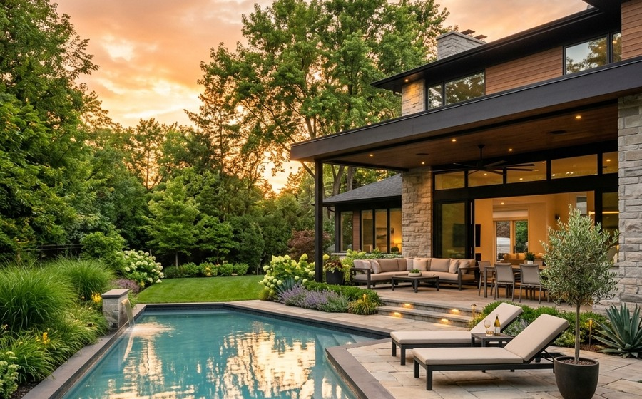
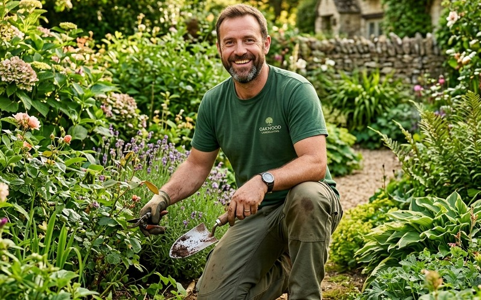
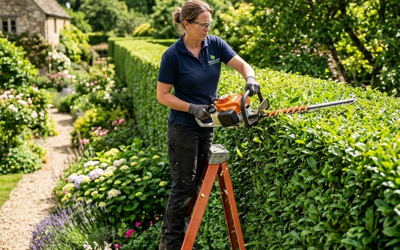
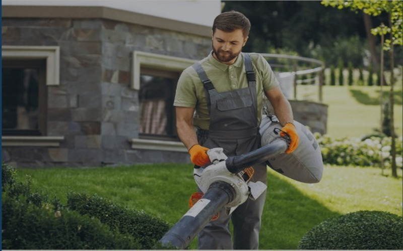

Landscaping Services in Stockport
Complete garden transformations, designed and built by one local team, from groundworks to the final planting.
Transform Your Outdoor Space
Whether your garden needs a full redesign or a fresh start, our landscaping service takes care of everything. We plan, prepare and build outdoor spaces across Stockport and Greater Manchester that look beautiful, work for the way you live and are built to last for years.
Because we handle every stage in-house, you deal with one team from start to finish. No juggling contractors, no surprises, just a finished garden you'll love.
Single Local Contractor
From concept to completionBuilt for Stockport Soil
Expert heavy clay drainageOur Landscaping Services
From heavy excavation and soil grading to the final stonework and lush planting, here is what we deliver across Stockport.
Full Garden Makeovers
Complete redesigns that turn tired gardens into usable, beautiful spaces tailored to outdoor living.
Site Clearance
Removal of overgrowth, old structures and waste to give your project a clean, safe start.
Ground Levelling
Professional levelling and grading for lawns, patios and planting areas to ensure structural integrity.
Drainage Solutions
Fix waterlogged lawns and pooling with soakaways, French drains and sub-base drainage systems.
Soft Landscaping
Turfing, planting, borders and beds that bring your garden to life with rich color and year-round texture.
Hard Landscaping
Patios, paths, walls and edging built with quality porcelain, Indian sandstone, and durable materials.
How It Works
A seamless, stress-free path from your initial consultation through to your finished outdoor sanctuary.
Free Consultation
We visit your garden, listen to your ideas, test your soil, and assess the natural layout of your space.
Design & Quote
You receive a clear garden plan, material samples, and a fixed, no-obligation quote with zero hidden extras.
Build
Our team carries out the work with care, managing all groundworks, deliveries, and keeping you updated throughout.
Handover
We walk you through your finished garden, conduct a quality sign-off, and share tailored seasonal care advice.
Recent Landscaping Projects in Stockport
A look at some of the gardens we've transformed across the area.
Bramhall Garden Transformation: Before & After
Full clay excavation, French drainage system, sandstone patio, and premium turfing.

Bramhall, StockportFamily Garden Makeover
Complete redesign turning a sloping, muddy plot into a safe, multi-tier garden with smooth porcelain paving and hardwearing turf.

Cheadle Hulme, StockportGround Levelling & Drainage
Laser-graded lawn installation combined with sub-base land drains to eliminate standing rainwater on difficult Cheshire clay soil.

Marple, StockportSloped Landscape Renovation
Oak sleeper terracing and natural stone steps connecting an elevated patio to a private, low-maintenance garden border.
Why Stockport Homeowners Choose Us
We take pride in exceptional customer communication, clean working practices, and long-lasting craftsmanship.
Local Experts
We know Stockport's soil, weather and gardens, choosing the right groundworks and plants that thrive locally.
One Team, Start to Finish
Design, build and planting all handled in-house with zero subcontractor headaches or delays.
Clear, Fixed Quotes
Transparent project quotes with fixed material specifications and no unexpected price hikes.
Fully Insured
Comprehensive public liability insurance and written guarantees for complete peace of mind on every project.
"Stockport Landscape Project completely transformed our waterlogged, uneven backyard in Bramhall into an incredible sandstone patio and lawn that we use every day. One team handled the excavation, drainage, paving and turfing seamlessly. Delivered on time and on quote."
Landscaping Across Stockport & Greater Manchester
Proudly designing and constructing luxury gardens across Stockport and neighbouring South Manchester communities:
Landscaping FAQs
Everything you need to know about planning, pricing, and building your new Stockport garden.
Every garden is different, so costs depend on size, materials and the work involved. We provide a free site visit and a clear, fixed quote with no obligation.
Smaller projects can take a few days, while full garden transformations usually take one to three weeks. We'll give you a timeline before work begins.
Yes. We take care of everything from the initial design through to construction and planting.
Absolutely. We work on everything from small courtyard gardens to large family gardens.
Most landscaping can be done year-round. Planting is ideal in spring and autumn, but we'll advise on the best timing for your project.